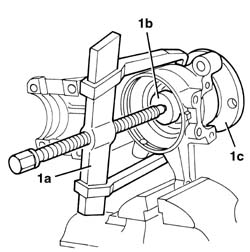
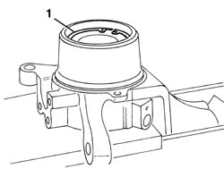
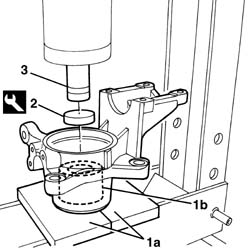
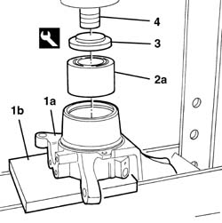
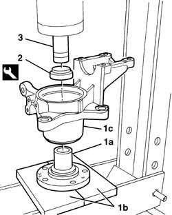

4450C34 BEARING OF ONE FRONT WHEEL HUB, L/H OR R/H - REPLACE WITH PILLAR REMOVED
- Path
- Procedures > 44 SUSPENSION AND WHEELS > 4450 WHEELS AND HUBS > 4450C FRONT WHEEL HUBS > 4450C34 BEARING OF ONE FRONT WHEEL HUB, L/H OR R/H - REPLACE WITH PILLAR REMOVED
- Kind
- repair procedure (removal / refitting; the operation number is the code)
- Applies to
- all engines; all production periods
- Interactive page
- https://sloeber94.github.io/elrnDB-fDct/en/#/244001215
Applies to: all engines; all production periods
 Removing
Removing
 Refitting
Refitting1. Work at the bench and, using a universal extractor (1a) and an appropriate diameter tool (1b), remove the hub (1c) from the steering knuckle.

Applies to: all engines; all production periods
1. Rotate the steering knuckle and remove the bearing circlip.

Applies to: all engines; all production periods
1. Position the steering knuckle in the press, resting on a plate (1a) with an opening in the centre that allows the bearing (1b) to be removed.
2. Position the special tool on the bearing (1b).
 | Description | Code | Function |
|---|---|---|---|
2 | Tool | 1.874.542.000 | Wheel hub bearing extraction |
3. Extract the bearing (1b) from the steering knuckle on the press.

Applies to: all engines; all production periods
Refitting
Removing- Check that the bearing is not damaged.
1. Position the steering knuckle (1a) on the press, resting on a plate (1b).
2. Position the bearing (2a) on the steering knuckle.
3. Position the special tool on the bearing (2a).
| Description | Code | Function |
|---|---|---|---|
3 | Tool | 1.875.057.000 | Wheel hub bearing fitting |
4. Fit the bearing (2a) in the housing using the press.

Applies to: all engines; all production periods
1. Fit the circlip in the housing.
Applies to: all engines; all production periods
1. Position the hub (1a) on the press, resting on a plate (1b). Position the steering knuckle with the bearing (1c) on the hub (1a) and keep it in position.
2. Position the special tool on the steering knuckle.
| Description | Code | Function |
|---|---|---|---|
2 | Tool | 1.875.057.000 | Wheel hub bearing fitting |
3. Fit the steering knuckle with the bearing on the hub using the press.
